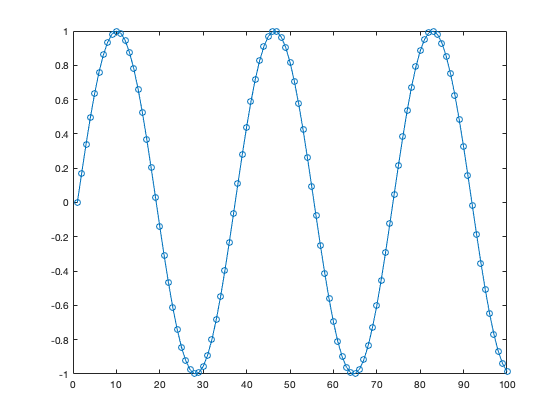
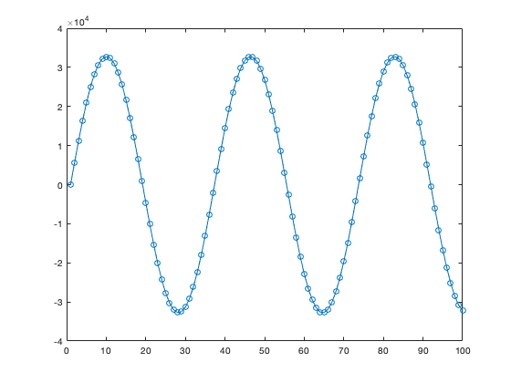

Reading a wave file into Matlab
Here we read a 16-bit wave file into Matlab.
Contents
Default data type (double)
When we use the audioread function in Matlab to read a wave file, we get an array of floating-point (double) numbers
[x, fs] = audioread('sin_01_mono.wav'); whos x
Name Size Bytes Class Attributes x 4000x1 32000 double
figure(1)
clf
plot(x, 'o-')
xlim([0 100])
 Matlab normalizes the signal to the range [-1, 1]
x(1:10)
ans =
0
0.1719
0.3387
0.4954
0.6374
0.7604
0.8607
0.9354
0.9822
0.9998
Native data type
When we use the audioread with the 'native' option, we get an array of 16-bit signed integers here. (It depends on the wave file in general.)
[x, fs] = audioread('sin_01_mono.wav', 'native'); whos x
Name Size Bytes Class Attributes x 4000x1 8000 int16
In this case, the signal values are not normalized to [-1, 1]
figure(1)
clf
plot(x, 'o-')
xlim([0 100])
 x(1:10)
ans =
10×1 int16 column vector
0
5633
11099
16234
20886
24916
28203
30651
32186
32762